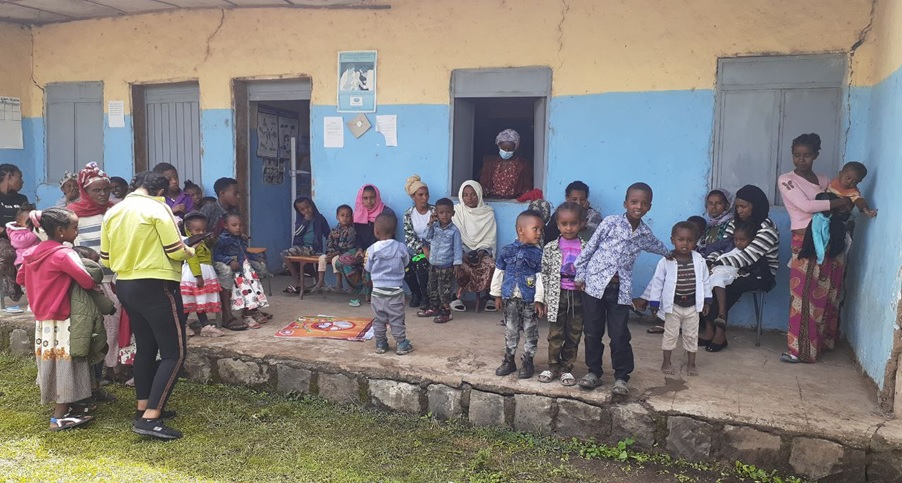

The 1st accelerometer data captured the 24-hour movement behaviour of Ethiopian preschool children.
Chalchisa Abdeta, PhD candidate and chief investigator of the SUNRISE Study Ethiopia, shared his country experience. The Ethiopia team began data collection in the phase 3 pilot study in April 2022. So far, only a small number of studies reported 24-hour movement behaviours (physical activity, sedentary behaviour and sleep) among preschool children in Africa and none from Ethiopia. Thanks to the SUNRISE International Study, the 1st accelerometer data captured the 24-hour movement behaviour of 400 preschool children (urban: 200, rural: 200) from April to September 2022 to examine adherence to the WHO 24-hour movement behaviour guidelines and association with development and health outcomes.
It was our first time conducting the study with an accelerometer device. Our team have received capacity-building training from Senior Professor Anthony Okely, the Principal investigator of the SUNRISE International Study, over zoom and in person at Adama, Ethiopia. Representatives from the local stakeholders attended the meeting from the Federal Ministry of Health, Oromia Regional Health Burau and Adama Hospital Medical College.
Ethiopia’s team were receiving capacity-building training at Adama
Challenges:
The nature of the study was new for Ethiopia, and we faced a challenge with getting consent at the initial stage. Initially, almost all parents had no interest in the study due to the myth of the accelerometer, "wearing monitors for five days may affect our children", even if we explained the reality well. Some parents said that "the device may suck our kid's blood". More educated parents gradually accepted our briefing about the device and received some consent. Then, we used different approaches. For instance, we sent an invitation letter with leaflets in two local languages and briefing the information for the kindergarten staff to convince more parents. We recognized that parents accept the information from the kindergarten staff than data collectors. It might be due to pre-established communication between early childhood educators and parents. Gradually, we recruited the required number of children per week from 1-2 centres. Our team convinced the children that they should wear the device day and night for five days, and the children were happy to wear it and even protected their family by not to remove when going to bed and taking showers.
The SUNRISE International Study is undergoing in more than 50 countries. Providing sufficient devices might be challenging. Ethiopia's team received 20 accelerometer devices. Children are expected to wear the device for five days. As a result, we only collect a maximum of 20 data per week due to limited access to accelerometer devices. Besides, some parents might withdraw from the study. Hence, it took about six months to complete about 400 data collection in Ethiopia.
Opportunities:
Kindness of rural peoplesUnlike urban areas, parents were very cooperative and happy to engage in the study. Initially, we have gave briefing about the study and consent taking process to the community health workers. More than required number of parents agreed to get involved in the study in each Kebele, the lowest administrative structure. All parents those gave consent showed strong willingness to bring their child into the nearest health post every other day during the study. But reaching some health posts is quite challenging due to poor road infrastructure and the rainy season.

Ethiopia’s team were receiving capacity-building training at Adama
Despite those challenges, we completed the urban and rural data collection with a low non-response rate. About 400 children have worn accelerometer devices continuously for five days. Finally, I would like to acknowledge the data collectors, parents/children, and all individuals for their continuous support for the success of completing this data collection.
Healthy kids Matter!